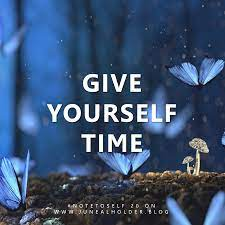
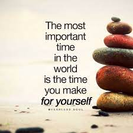

What Makes You Happy?
How to be Happy?
People often think things like money or luxury lead to happiness, but research indicates some healthy life practices may actually be the key. Simple experiences like spending time with friends and family or practicing gratitude may promote a healthier outlook on life. So according to this my motto is helping the people around the world!
Are You Happy?
Our issues, our pain, our hurt, our frustrations, our limiting belief systems, our patterns, our habits, our so called “weaknesses”, all serve a purpose. We create our world. Within and around us every single choice, every decision, every repercussion is of our choosing. We are not victims. We are masters of our choices. We may choose to see ourselves as victims, but that too is a choice. We may choose to stay victims. But that too is a choice. There is only one person that can empower or disempower you, and that person is you. You can choose to keep your remote control or hand it to someone else. That again, is a choice.
Tell Me Your Dream
Most people I know have a dream. In fact, I’ve asked hundreds, if not thousands, of people about their dream. Some willingly describe it with great detail and enthusiasm. Others are reluctant to talk about it. They seem embarrassed to say it out loud. These people have never tested their dream. They don’t know if others will laugh at them. They’re not sure if they’re aiming too high or too low. They don’t know if their dream is something they can really achieve or if they’re destined to fail.
Could You Give TIME to yourself today?
Whether it’s the responsibilities piling up at work, the chores you have to do at home, or the people in your life who need your attention, it can feel like you have too much on your mental load if you never get to step away from it all.That’s why it’s important to learn how to take time for yourself.
 